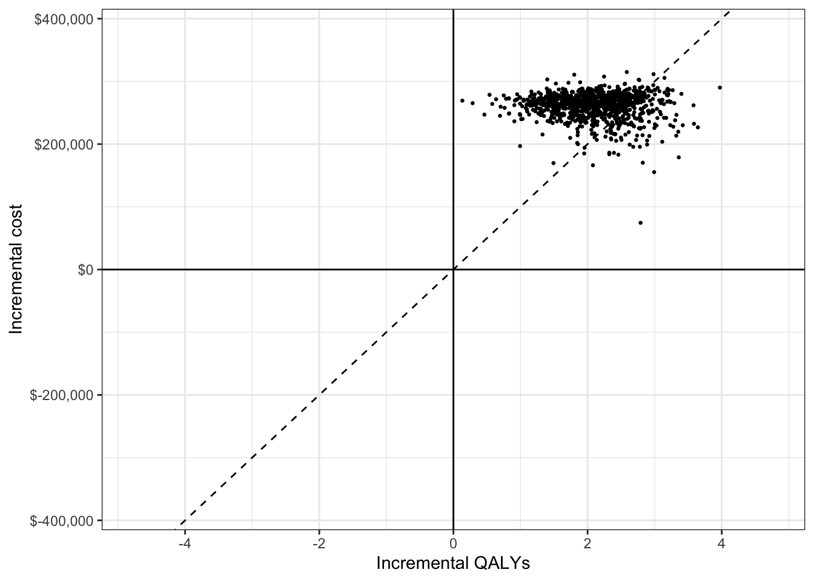

vignettes/02-markov-cohort-psa.Rmd
02-markov-cohort-psa.RmdProbabilistic sensitivity analysis (PSA) is used to quantify the impact of parameter uncertainty on the uncertainty of model outputs. PSA is typically performed via a simulation approach whereby the model parameters are randomly sampled from suitable probability distributions and the entire model is simulated for each random draw of the parameters.
In this example, we extend the deterministic simple Markov cohort model to incorporate PSA. We will continue to rely primarily on Base R but will use the hesim package to help make the code more readable.
The probability distribution used for transition probabilities will depend on the underlying data. In this case, we assume that summary level data is available on transitions from the Healthy state (n = 900), Sick state (n = 900), and Sicker state (n = 800). The transitions from each state to the other 4 states can be modeled using a Dirichlet distribution (see Appendix).
We estimate treatment effects in terms of the log relative risk since it is approximately normally distributed; that is, the relative risk follows a lognormal distribution. The mean is given by the log of the point estimate of the relative risk, or \(log(0.8)\).
Since academic studies often report 95% confidence intervals for a parameter, but not its standard error, we will assume that is the case. Specifically, let the lower bound be \(log(0.71)\) and the upper bound be \(log(0.91)\). The standard error is then given by \((log(0.91) - log(0.71))/2z\) where \(z = \Phi^{-1}(0.975)\approx 1.96\). See the Appendix for details.
Medical costs are of often assumed to follow a gamma distribution because it can be used to model right skewed distributions. The gamma distribution is defined in terms of a shape and scale (or rate) parameter. However, these parameters can be derived form the mean and standard deviation of a distribution using the method of moments. Mean costs follow those in the deterministic example (H = $2,000, S1 = $4,000, S2 = $2,000), D = \(0\)). The standard deviation in each state is assumed to be equal to the mean.
The utility associated with each state is assumed to follow a beta distribution, which is bounded between 0 and 1. The beta distribution is defined in terms of 2 shape parameters, but like the gamma distribution , these can be derived using the method of moments. We assume that the mean (standard error) of utility is estimated to be \(1\) \((0.0)\), \(0.75\) \((0.03)\), \(0.5\) \((0.05)\), and \(0\) \((0.0)\) in state H, S1, S2, and D, respectively.
The simulation proceeds by (i) randomly sampling the parameters from the probability distributions specified above and (ii) running the Markov model for each draw of the parameters. The result is a draw from the probability distribution of each of the model outputs of interest (i.e, state probabilities, QALYs, and costs).
While Base R can certainly be used to draw samples of the parameters, the functions hesim::define_rng() and hesim::eval_rng() simplify this process and make the code more readable. Any random number generation function can be used inside the define_rng() block; the only rule is that returned parameter draws must be returned as a list. However, hesim comes with a number of helpful probability distribution functions (type ?rng_distributions for details) to make your life easier.
rng_def <- define_rng({
lrr_se <- (lrr_upper - lrr_lower)/(2 * qnorm(.975)) # Local object
# not returned
list( # Parameters to return
p_soc = dirichlet_rng(alpha_soc),
rr_new = lognormal_rng(lrr_mean, lrr_se),
c_medical = gamma_rng(mean = c_medical, sd = c_medical),
c_soc = c_soc,
c_new = c_new,
u = beta_rng(mean = u_mean, sd = u_se)
)
}, n = 1000)
params_rng <- eval_rng(rng_def, params = params)
attr(params_rng, "n") <- rng_def$n
names(params_rng)## [1] "p_soc" "rr_new" "c_medical" "c_soc" "c_new" "u"## h_h h_s1 h_s2 h_d s1_h s1_s1 s1_s2
## [1,] 0.8664636 0.1326425 0 0.0008938927 0.5221487 0.3785125 0.0873510
## [2,] 0.8362213 0.1626321 0 0.0011466574 0.4945469 0.3924874 0.1045916
## [3,] 0.8540110 0.1444352 0 0.0015538154 0.4863536 0.3952449 0.1106708
## [4,] 0.8619489 0.1361566 0 0.0018945533 0.4858616 0.4079287 0.1022797
## [5,] 0.8492876 0.1464995 0 0.0042129100 0.4795651 0.4021997 0.1102126
## [6,] 0.8558339 0.1428937 0 0.0012723529 0.5175374 0.3601818 0.1157765
## s1_d s2_h s2_s1 s2_s2 s2_d d_h d_s1 d_s2 d_d
## [1,] 0.011987761 0 0 0.9783253 0.02167467 0 0 0 1
## [2,] 0.008374118 0 0 0.9712405 0.02875949 0 0 0 1
## [3,] 0.007730674 0 0 0.9866868 0.01331317 0 0 0 1
## [4,] 0.003930087 0 0 0.9747369 0.02526306 0 0 0 1
## [5,] 0.008022649 0 0 0.9805545 0.01944547 0 0 0 1
## [6,] 0.006504192 0 0 0.9858389 0.01416105 0 0 0 1Once samples of the parameters have been drawn, the Markov model can be simulated for each draw.
One way that a Markov simulation can be generalized is to store “input data” in an object such as a data frame. This input data might consist of different treatment strategies, patients and/or subgroups, or even information about the health states themselves. For instance, if we were simulating different subgroups we might store the age and sex associated with the subgroup which could, in turn, be used as covariates in a statistical model. In this simple example the data will just consist of the names of the two treatment strategies.
data <- data.frame(
strategy = c("New", "SOC")
)
head(data)## strategy
## 1 New
## 2 SOCIt is a good idea to modularize your R code into functions. This can make your code more readable, maintainable, and reusable. We will work toward a sim_model() function that runs the entire simulation. It will be comprised of three smaller functions: sim_stateprobs(), compute_qalys(), and compute_costs().
The sim_stateprobs() function will simulate health state probabilities for each model cycle (i.e., the Markov trace) for a given treatment strategy and parameter sample. It takes the arguments:
p0: the transition probability matrix for SOC,rr: the relative risk)strategy: the name of the treatment strategy as defined in data above.n_cycles: The number of cycles to simulate the model for.To make the code more readable, we will use the function hesim::tpmatrix() which makes it easy to define a transition probability matrix. The symbol C denotes that a given element is the complement of all other elements in that row, ensuring that the probabilities sum to 1.
sim_stateprobs <- function(p0, rr, strategy, n_cycles){
rr <- ifelse(strategy == "New", rr, 1)
p <- tpmatrix(
C, p0$h_s1 * rr, p0$h_s2 * rr, p0$h_d * rr,
p0$s1_h, C, p0$s1_s2 * rr, p0$s1_d * rr,
p0$s2_h, p0$s2_s1, C, p0$s2_d * rr,
0, 0, 0, 1
)
x <- sim_markov_chain(x0 = c(1, 0, 0, 0),
p = matrix(as.matrix(p), ncol = 4, byrow = TRUE),
n_cycles = n_cycles)
return(x)
}To compute (discounted) QALYs for a given Markov trace, we will use a very simple function that is identical to the compute_qalys function used in the deterministic example.
compute_qalys <- function(x, utility, dr = .03){
n_cycles <- nrow(x) - 1
pv(x %*% utility, dr, 0:n_cycles)
}Similarly, our cost function is nearly identical to the compute_costs() function from the deterministic example.
compute_costs <- function(x, costs_medical, costs_treat, dr = .03){
n_cycles <- nrow(x) - 1
costs_treat <- c(rep(costs_treat, 3), 0)
costs <- cbind(
pv(x %*% costs_medical, dr, 0:n_cycles),
pv(x %*% costs_treat, dr, 0:n_cycles)
)
colnames(costs) <- c("dcost_med", "dcost_treat")
return(costs)
}Now that we have created the building blocks for the simulation, we can create our main function to simulate the entire model. 3% discount rates are set by default for costs and QALYs. Most of the function arguments should be self explanatory, but two are worth explaining:
params_rng: The output of eval_rng() above.data: The data object defined aboveThe first part of the function creates an array to store the output. The array is a series of matrices each with n_cycles rows and columns for each output (i.e., state probabilities for the four health states, QALYs, treatment costs, and medical costs). There is one matrix for each parameter sample for the PSA and treatment strategy.
The second part of the function simulates state probabilities (with sim_stateprobs()), QALYs (with compute_qalys()), and costs (with compute_costs()) for each parameter sample and treatment strategy. The number of parameter samples and the names of the treatment strategies are saved as attributes (i.e., metadata) to the array which will be used below to convert the array to a data frame.
sim_model <- function(params_rng, data, n_cycles = 85,
dr_qalys = .03, dr_costs = .03){
# Initialize array of matrices
n_samples <- attr(params_rng, "n")
n_strategies <- nrow(data)
out <- array(NA, dim = c(n_cycles + 1, 7, n_samples * n_strategies))
dimnames(out) <- list(NULL,
c("H", "S1", "S2", "D",
"dqalys", "dcosts_med", "dcosts_treat"),
NULL)
# Run the simulation
i <- 1
for (s in 1:n_samples){ # Start PSA loop
for (k in 1:n_strategies) { # Start treatment strategy loop
x <- sim_stateprobs(p0 = params_rng$p_soc[s, ],
rr = params_rng$rr_new[s],
strategy = data$strategy[k],
n_cycles = n_cycles)
dqalys <- compute_qalys(x, utility = unlist(params_rng$u[s]),
dr = dr_qalys)
dcosts <- compute_costs(x,
costs_medical = unlist(params_rng$c_medical[s]),
costs_treat = ifelse(data$strategy[k] == "SOC",
params_rng$c_soc,
params_rng$c_new),
dr = dr_costs)
out[, , i] <- cbind(x, dqalys, dcosts)
i <- i + 1
} # End treatment strategy loop
} # End PSA loop
# Store metadata and return
attr(out, "n_samples") <- n_samples
attr(out, "strategies") <- data$strategy
return(out)
}Now that we’ve written the function, lets simulate the model with argument defaults (85 model cycles and 3% discount rates). Recall that each array is a matrix.
sim_out <- sim_model(params_rng, data = data)
head(sim_out[, , 1])## H S1 S2 D dqalys dcosts_med
## [1,] 1.0000000 0.0000000 0.000000000 0.000000000 1.0000000 1901.016
## [2,] 0.8761213 0.1203956 0.000000000 0.003483085 0.9331267 2518.754
## [3,] 0.8296763 0.1534778 0.009646643 0.007199270 0.8894709 2714.428
## [4,] 0.8060452 0.1610746 0.021704687 0.011175595 0.8532616 2783.439
## [5,] 0.7892591 0.1612580 0.034072297 0.015410662 0.8199984 2810.255
## [6,] 0.7746470 0.1593101 0.046147807 0.019895071 0.7883799 2819.434
## dcosts_treat
## [1,] 12000.00
## [2,] 11609.91
## [3,] 11229.72
## [4,] 10858.97
## [5,] 10497.54
## [6,] 10145.37Although arrays are computationally efficient objects for storing data, they aren’t often the most useful for summarizing data. We will write to short functions to convert a 3D array to a data.table (with ID columns for the parameter sample and treatment strategy) so that we can summarize outcomes for each parameter sample and treatment strategy very quickly. (Note that other packages such as dplyr could also be used but we prefer data.table for simulations because of its speed).
# rbind an array of matrices into a single matrix
rbind_array <- function(x){
n_rows <- dim(x)[3] * dim(x)[1]
x_mat <- matrix(c(aperm(x, perm = c(2, 1, 3))),
nrow = n_rows, byrow = TRUE)
colnames(x_mat) <- dimnames(x)[[2]]
return(x_mat)
}
# Convert the array into a long dataframe with ID columns
array_to_dt <- function(x){
id_df <- expand.grid(cycle = 0:(dim(x)[1] - 1),
strategy = attr(x, "strategies"),
sample = 1:attr(x, "n_samples"))
x_mat <- rbind_array(x)
return(as.data.table(cbind(id_df, x_mat)))
}
sim_out <- array_to_dt(sim_out)
head(sim_out)## cycle strategy sample H S1 S2 D dqalys
## 1: 0 New 1 1.0000000 0.0000000 0.000000000 0.000000000 1.0000000
## 2: 1 New 1 0.8761213 0.1203956 0.000000000 0.003483085 0.9331267
## 3: 2 New 1 0.8296763 0.1534778 0.009646643 0.007199270 0.8894709
## 4: 3 New 1 0.8060452 0.1610746 0.021704687 0.011175595 0.8532616
## 5: 4 New 1 0.7892591 0.1612580 0.034072297 0.015410662 0.8199984
## 6: 5 New 1 0.7746470 0.1593101 0.046147807 0.019895071 0.7883799
## dcosts_med dcosts_treat
## 1: 1901.016 12000.00
## 2: 2518.754 11609.91
## 3: 2714.428 11229.72
## 4: 2783.439 10858.97
## 5: 2810.255 10497.54
## 6: 2819.434 10145.37A cost-effectiveness analysis (CEA) can be performed using the simulation output. A PSA is typically used to represent decision uncertainty using the distribution of (discounted) QALYs and (discounted) total costs. As such, will compute mean discounted QALYs and discounted costs by parameter sample and treatment strategy. As in the previous tutorial, we assume that transitions occur immediately and therefore exclude costs and QALYs measured at the start of the first model cycle.
ce_out <- sim_out[cycle != 0,
.(dqalys = sum(dqalys),
dcosts = sum(dcosts_med) + sum(dcosts_treat)),
by = c("sample", "strategy")]
ce_out## sample strategy dqalys dcosts
## 1: 1 New 22.46453 424193.11
## 2: 1 SOC 19.79403 171692.25
## 3: 2 New 24.63744 411513.48
## 4: 2 SOC 21.75544 139341.69
## 5: 3 New 21.94022 582726.30
## ---
## 1996: 998 SOC 20.36152 74070.17
## 1997: 999 New 24.32977 547848.32
## 1998: 999 SOC 22.45038 296303.99
## 1999: 1000 New 22.92601 469550.31
## 2000: 1000 SOC 20.85917 212142.96In the two treatment strategy case its simpler to “widen” the data so that we can easily compute incremental QALYs and incremental costs.
## sample dqalys_New dqalys_SOC dcosts_New dcosts_SOC
## 1: 1 22.46453 19.79403 424193.1 171692.25
## 2: 2 24.63744 21.75544 411513.5 139341.69
## 3: 3 21.94022 20.99635 582726.3 330673.48
## 4: 4 23.39585 21.26487 457973.7 200523.01
## 5: 5 23.55769 21.19810 394077.7 112846.31
## ---
## 996: 996 23.32635 21.03058 470554.5 214179.13
## 997: 997 23.22674 20.81661 504809.5 264268.24
## 998: 998 22.27161 20.36152 345012.4 74070.17
## 999: 999 24.32977 22.45038 547848.3 296303.99
## 1000: 1000 22.92601 20.85917 469550.3 212142.96The ICER is computed by taking means across all parameter samples.
ce_out_wider[, idcosts := dcosts_New - dcosts_SOC]
ce_out_wider[, idqalys := dqalys_New - dqalys_SOC]
ce_out_wider[, .(icer = mean(idcosts)/mean(idqalys))]## icer
## 1: 125028.7We can also use a cost-effectiveness plane to visually represent uncertainty in incremental QALYs and incremental costs. The dotted line represents willingness to pay for a QALY (in this example, $100,000) and points below the line are cost-effective while points above the line are not.

A more formal and thorough treatment of CEA and decision uncertainty is given in the CEA tutorial.
The multinomial distribution is a discrete probability distribution for the number of successes for each of k mutually exclusive categories in n trials. The probabilities of the categories are given by \(\pi_1,\ldots, \pi_k\) with \(\sum_{j=1}^k \pi_j=1\) and each \(\pi_j\) defined on \([0,1]\). The Dirichlet distribution is parameterized by the concentration parameters \(\alpha_1,\ldots, \alpha_k\) with \(\alpha_j > 0\). Letting \(x_1,\ldots, x_k\) denote the number of successes in each category, the prior distribution and likelihood are,
\[ \begin{aligned} p(\pi_1,\ldots,\pi_k |\alpha_1,\ldots, \alpha_k) = \text{Dirichlet}(\alpha_1,\ldots,\alpha_k) \\ p(x_1,\ldots,x_k | \pi_1,\ldots,\pi_k) = \text{Multin}(n, \pi_1,\ldots,\pi_k). \end{aligned} \]
Let \(\theta\) be a normally distributed random variable, \(\sigma\) be the standard deviation of \(\theta\), and \(z = \Phi^{-1}(1 - \alpha/2)\) for a given confidence level \(\alpha\). A confidence interval for \(\theta\) is then given by \((\theta - z\sigma, \theta + z\sigma)\) with width given by \(2z\sigma\). If lower and upper limits are given by \(\theta_L\) and \(\theta_U\), \(\sigma\) can be solved with
\[ \sigma = \frac{\theta_U - \theta_L}{2z}. \]
A 95% confidence interval is evaluated with \(z = \Phi^{-1}(.975)\).